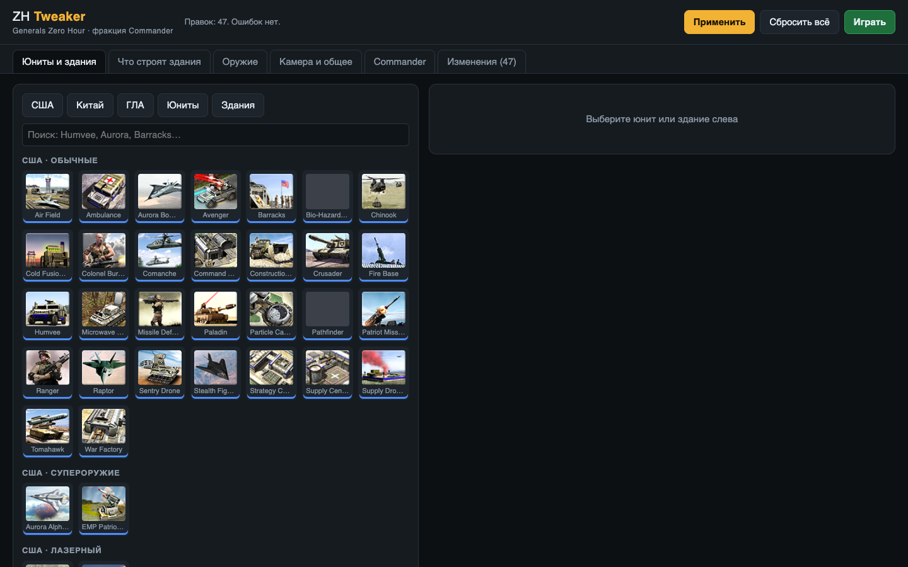

Edit any unit in C&C Generals Zero Hour on Mac
ZH Tweaker is a free browser-based editor for Command & Conquer Generals Zero Hour running natively on Apple Silicon through GeneralsX. No INI files, no Windows, no mod tools.

- Commander faction with every unit, building and general power of USA, China and GLA
- Health, speed, cost, build time, vision, passenger slots, power and income in one click
- Swap weapons, tune damage, range, reload and projectiles
- Make any building build any unit
- Camera height up to 690
- Missile smoke and weapon sounds kept on in big battles
- Change list grouped by unit with undo; vanilla factions and the AI stay untouched
- Interface in English and Russian
Install
Needs an Apple Silicon Mac, macOS 15 or newer, and Zero Hour running through GeneralsX with your own copy of the game. Open Terminal and paste:
curl -fsSL https://raw.githubusercontent.com/deanlawkz/zh-tweaker/main/install.sh | bashA ZH Tweaker icon appears in Applications. Node.js is downloaded automatically if missing. Run the same command to update.


FAQ
Does ZH Tweaker change the original game files?
No. Game archives (.big) are only read. The tweaker adds separate ZHT_*.ini files that the engine loads on top, and Reset all removes them.
Does it work on Intel Macs?
No. GeneralsX, the macOS port of Zero Hour, supports Apple Silicon only.
Can I play online with my changes?
No, opponents would desync. Press Reset all before online games and Apply again after.
Where do I get the game for Mac?
Install GeneralsX and copy the Zero Hour files from your own Steam or EA copy to ~/GeneralsX/GeneralsZH. The guide explains SteamCMD and other options.
Does it support Contra or The End of Days mods?
Not yet. Only vanilla Zero Hour is supported; mod support is planned.
How do I uninstall it?
Run: curl -fsSL https://raw.githubusercontent.com/deanlawkz/zh-tweaker/main/uninstall.sh | bash